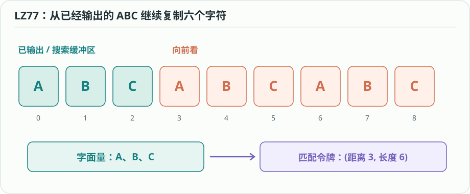
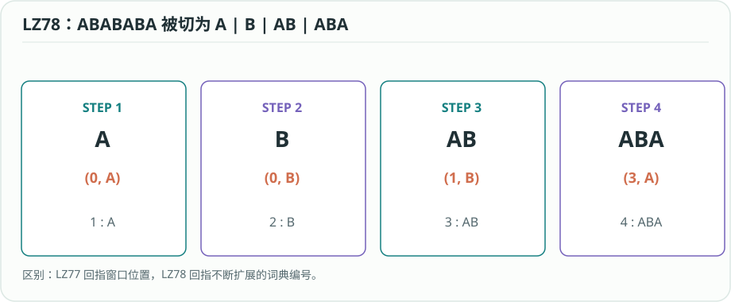
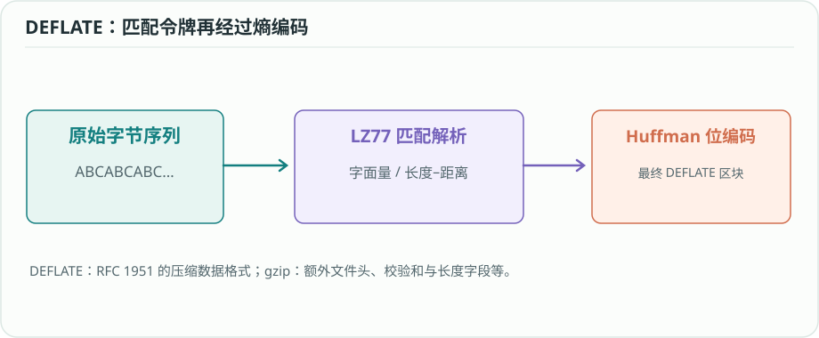

为什么重复序列可以不用再发一次？
设需要发送文本 ABCABCABC。如果每个字节直接存储为 8 位，需要 72 位（不计其他元数据）；但读到第 4 个字符时，前面的 ABC 已经出现。编码器可以告诉解码器：“回看 3 个字符，再复制 6 个字符”。这样传的是重复出现的位置与长度，不是把重复内容重新逐字传输。
这里的 72 位仅是未压缩 ASCII 字节示例，不能直接与尚未定义二进制字段宽度的令牌方案比较真实文件大小。压缩是否划算由匹配长度、字面量表示、码表及容器开销共同决定。
LZ77：滑动窗口与允许重叠的回指
LZ77 编码器保存已经处理的历史，寻找与当前位置前瞻缓冲区相同的最长匹配，再输出一个描述已有字符串的回指。一个概念性令牌可表示为 (distance,length)，而未匹配到合适内容时输出 literal。真实格式的有效长度与距离范围由格式协议定义。

关键细节是允许匹配跨过最初的历史边界。当历史只有 ABC，回距 3 的拷贝先产生 ABC；这三个新输出又可以作为后续拷贝的来源。若错误地先把全部来源切片复制一次，就只能得到 3 个字符，而不是 6 个。
式中索引从零计，输出位置为 t，距离 d 必须在已有输出范围之内。这个递推可以解释为何单字符循环能够正确处理重叠模式。
LZ78：输出的是“已知词 + 一个新字符”
LZ78 不是在滑动窗口里寻找绝对位置，而是从空词典开始，每轮找出最长的已知词 w，再读取紧随其后的新符号 c，输出 (index(w),c) 并将 wc 作为新词添加进词典。

输入 ABABABA 对应短语 A | B | AB | ABA。词典依次加入 1→A、2→B、3→AB、4→ABA。若输入刚好以一个已存在的词结束，实际格式必须定义如何表达最终不带新增字符的词，而不能偷偷假定总有下一个符号。
基于历史 ABC，按输出缓冲区逐字符追加 6 次；此实验只演示回指机制，不代表格式压缩率。
LZW：码字与字典增长要同步
LZW 则在双方预置初始字符集的情况下，逐步学习新的短语，不像 LZ78 那样每条输出显式附带新字符。编码器先输出最长已知字符串的词典编号，再添加新的连接词；解码器用历史输出和下一代码重建相同的词典状态。
其中有著名的 KwKwK 特殊情况：当前输入码字恰好是“下一个待创建的词典索引”。解码器不能简单将其当作非法码字，而要用前一个已解码词加其首字符构造该词，前提是状态恰好匹配这一特殊规则。
DEFLATE 为什么同时使用 LZ77 和 Huffman？
基于 RFC 1951，DEFLATE 先用 LZ77 识别重复片段，再将 literal 与长度–距离信息映射成带有 Huffman 结构的紧凑位流。它支持未压缩区块、固定 Huffman 码区块和动态 Huffman 码区块，且不同区块的树可以不同。

gzip 不等于 DEFLATE。gzip 文件封装由另一套规范定义，包含头部、校验和等字段；使用 DEFLATE 作为压缩数据本体。不能用 gzip.compress 输出字节数来代替“理论熵界”的测量。
可复现演示：压缩和解码必须严格往返
示例模块 examples/channel_coding.py 实现教学版 LZ77、LZ78 及确定性往返测试，不声称与标准 DEFLATE 的令牌格式兼容。
from examples.channel_coding import (
lz77_tokens, lz77_decode,
lz78_tokens, lz78_decode
)
text = "ABCABCABC"
tokens = lz77_tokens(text, window=16, min_match=3)
assert lz77_decode(tokens) == text
assert ("ref", 3, 6) in tokens
phrase = "ABABABA"
encoded = lz78_tokens(phrase)
assert lz78_decode(encoded) == phrase
print(tokens, encoded)记住评价指标有两种：算法机制是否正确可逆，以及包含码表、头部和令牌实际二进制格式后的完整压缩成本。本页只保证前者。
什么时候字典压缩不合适？
很短的随机数据可能完全没有足够长的匹配；已经压缩过的数据通常没有易于利用的明显重复，可能出现文件变大。若局部重复度随位置变化，窗口大小、搜索策略和重设字典也会影响性能。LZ77 的 1977 年原始论文研究的是可逐步学习序列性质的通用压缩思想，但不能由此推断所有具体实现都有相同复杂度与压缩效果。
从下一篇开始，我们将把压缩得到的比特送进带噪信道。源编码减少不必要的表示；信道编码则添加受控冗余来提高可恢复性。两者目标恰好不同。
来源与延伸阅读
- Ziv & Lempel (1977), A Universal Algorithm for Sequential Data Compression：滑动窗口通用压缩思想。
- Ziv & Lempel (1978), Compression of Individual Sequences via Variable-Rate Coding：词典式构造的历史来源。
- RFC 1951 — DEFLATE Compressed Data Format：区块、LZ77 回距与 Huffman 位流的标准。